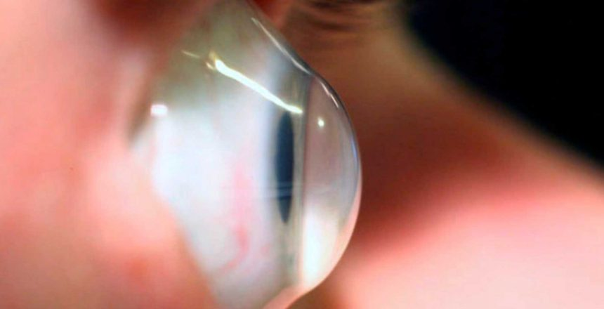

A causa exata do ceratocone não estabelecida, mas o que se sabe é que a doença está relacionada a fatores
como:
Hereditariedade: observa-se uma maior incidência de ceratocone em famílias onde vários membros têm
a condição. Sendo assim, a influência genética pode ser uma das causas, embora ainda não se saiba exatamente
quais genes estão envolvidos no ceratocone. Alergia ocular: o hábito de coçar os olhos tende a enfraquecer a
córnea e aumentar o risco de deformação da sua estrutura. Além disso, fazer pressão sobre os olhos durante o
sono, com a mão ou o travesseiro pressionado contra os olhos, também pode agravar a doença.

Quais são os sintomas de ceratocone?A causa exata do ceratocone não estabelecida, mas o que se sabe é que a doença está relacionada a fatores como: